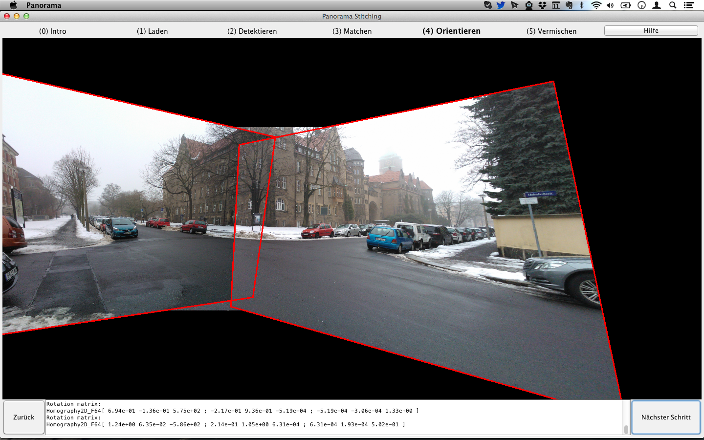

Im vorangehenden Schritt wurden Interest Points in allen Bildern assoziiert und so homologe Punktpaare gefunden. Um die Bilder relativ zueinander orientieren (und damit zusammenzusetzen) zu können, muss eine Transformationsmatrix berechnet werden, die beschreibt wo ein Punkt Bild A in Bild B liegt. Die relative Orientierung besteht aus fünf Parametern (Translation in XY, Rotation in XYZ) und ist maßstabslos, deswegen werden fünf homologe Punktepaare benötigt. Die Transformationsmatrix wird mit Hilfe von RANSAC (Random Sample Consensus) berechnet. RANSAC wählt dabei fünf zufällige homologe Punktepaare, berechnet eine Homographie (Transformationsmatrix) und überprüft die Anzahl der Inlier. Die Parameter für RANSAC sind wie folgt:
In diesem Schritt wird die relative Orientierung zwischen den Bildern dargestellt, in dem sie übereinander gelegt werden.
